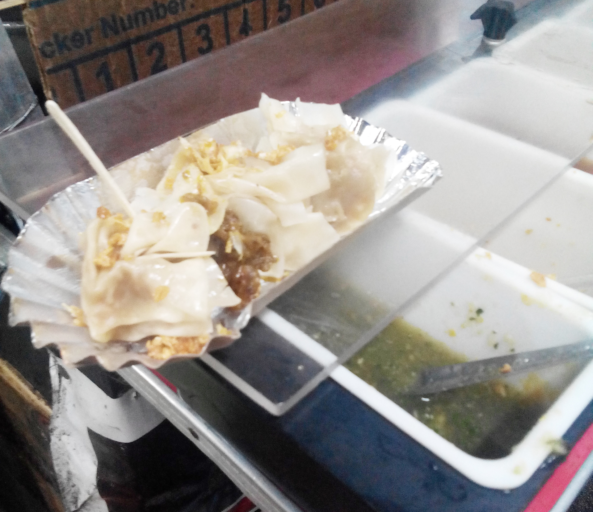

Pork Siomai
Ingredients
- 1 kg ground pork (suggested proportion of fat to lean meat is 1:3)
- 1/3 cup chopped water chestnuts or turnips (singkamas)
- 3/4 cup chopped carrots
- 2 tbsp or 4 cloves minced garlic
- 2 medium or 1 large minced onion(s)
- bunch of spring onions or leeks
- 1 egg
- 5 tablespoons sesame oil
- 1 teaspoon freshly ground pepper
- 1 teaspoon salt
- 5 g seasonings
- 50 pcs. large or 100 pcs. small wanton or siomai wrapper
- Soy sauce, calamansi (lemon or kumquats), sesame oil and chilli paste (for the sauce)
Siomai Cooking Instructions:
- 1. Mix all the ingredients for the filling in a bowl.
- 2. Arrange 10 wrappers in a tray, and weigh 100 g of siomai mixture. Place 2 tsp of meat in each wrapper until nothing is left unfilled. Each wrapper will have 10 grams of siomai.
- 3. To enclose, gather up the edges of the wrapper and gently fold it so that it forms a basket shape, with the top of the filling exposed. Press lightly as you pleat each side. Or, if you don’t want to expose the filling, use a bigger wrapper. Do the same to the remaining meat mixture.
- 4. Meanwhile, boil water and brush steamer with oil.
- 5. When the water gets to a rolling boil, arrange the siomai in the steamer and let stand for 15-20 minutes, longer for larger pieces.
- 6. Serve with soy sauce, calamansi and sesame oil. Chilli paste is optional.